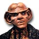
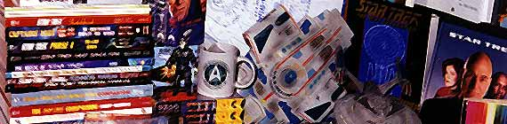
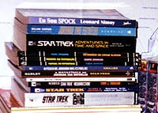
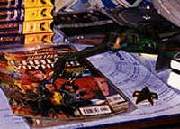
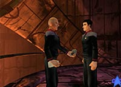
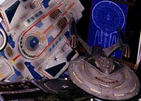

|
 em-vindos! Permitam que eu me apresente. Meu nome Quark, e fui convidado para coordenar esta seo. Quero aproveitar para registrar um protesto: s aceitei o convite sob ameaas de Odo, que me acusa injustamente de cobrar um falso imposto dos clientes do meu bar. Mas, de todo modo, esta a melhor seo do site: trata exclusivamente de artigos comerciveis de Jornada nas Estrelas. Isso mesmo. Esqueam filmes! Esqueam episdios! O importante o que vocs podem pegar, tocar, acariciar e, mais importante, levar para casa! |


 Clique aqui para ir a um guia dos livros publicados sobre Jornada. Novelas, manuais tcnicos, biografias, est tudo l. Tambm anlises crticas de alguns ttulos, mas no leve essa parte to a srio. Todos os livros so timos! |
 |
 Aqui h uma lista de todo o material j publicado sobre Jornada nesta que uma das mais nobres formas de arte! a minha favorita. Afinal, quando usam desenhos de meu rosto, eu ganho algumas barras de ouro paraltino! |
 |
Esta seo apresentar em breve um histrico dos jogos eletrnicos de Jornada nas Estrelas. Realmente, no nada de muito especial. Vocs podem se divertir muito mais por muito menos em uma holo-sute do meu bar. |
 |
E, finalmente, a seo Memorabilia. O paraso de consumo trekker! tens que vo desde bonecos com a imagem dos personagens (oba, mais ouro para meu cofre!), a relgios, modelos de naves, chinelos, quebra-cabeas... |
 |
| Se
voc possuir algum item interessante e quiser mostr-lo nesta
seo, sinta-se vontade! Envie o texto seguindo as instrues
da Incubadora do
site e duas barras de ouro... (ai, ai, Odo! Est bem, est
bem!), GRATUITAMENTE!
E, sempre que quiserem adquirir algum item mostrado aqui, basta contatar-me, via comunicao subespacial criptografada, para o Quarks, estao Deep Space Nine. Divirtam-se! |
|